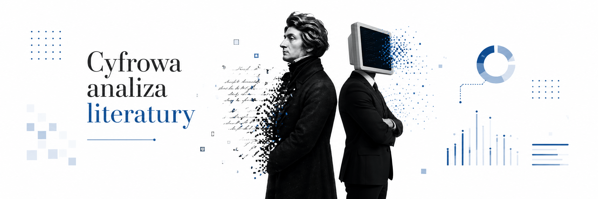
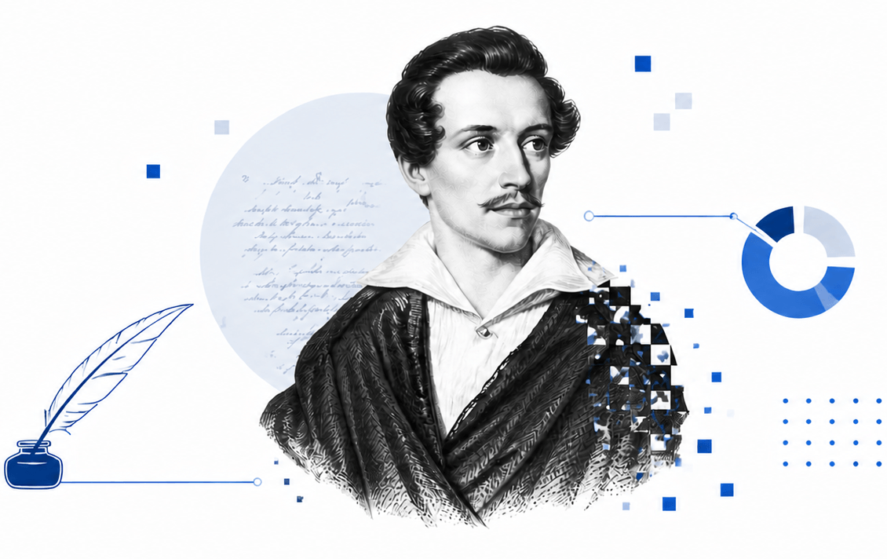
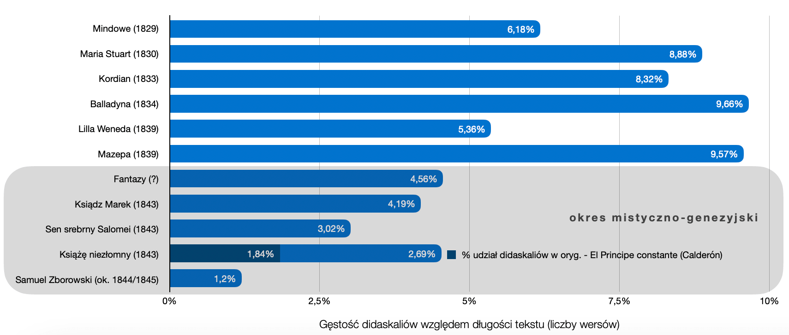
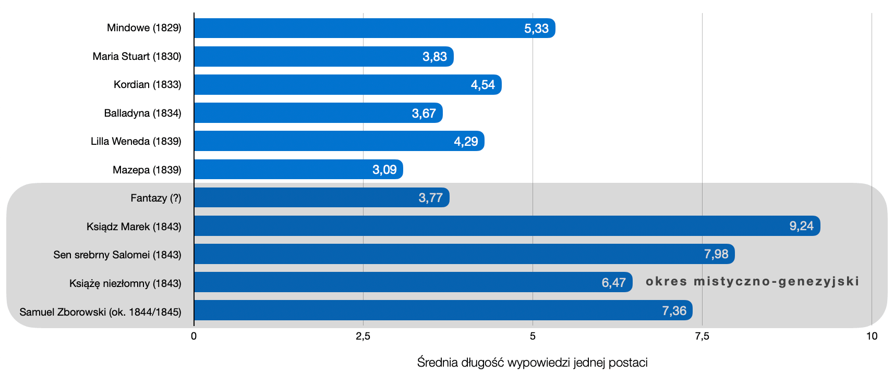
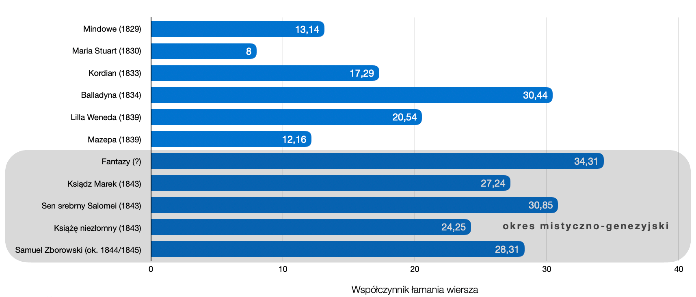

O narzędziu...
Strona umożliwia przeanalizowanie tekstu dowolnego dramatu (w języku polskim) pod kątem:- jego zróżnicowania wersyfikacyjnego
- średnia długość odcinka izosylabicznego,
- średnia długość wypowiedzi jednej postaci (pokazuje gęstość interakcji między postaciami),
- wektory ekspresji interpunkcyjnej (gęstość wykrzyknień i pytań),
- wskaźnik łamania wiersza, czyli procentowy udział linijek wypowiedzi, które nie kończą się znakiem interpunkcyjnym zamykającym strukturę składniową, w stosunku do wszystkich linijek (z wyłączeniem didaskaliów),
- wskaźnik gęstości tekstu pobocznego (liczba wystąpień didaskaliów względem długości tekstu głównego),
- indeks nasycenia tekstu pobocznego wypowiedziami „na stronie” (gęstość apartu),
- wskaźnik referencji pierwoszoosobowej (gęstość zaimków osobowych i dzierżawczych związanych z 1. os. l. poj.).
Po co cyfrowo badać literaturę?
Studium przypadku: Twórczość dramatyczna Juliusza Słowackiego

| Transformacja tekstów Słowackiego po przełomie mistycznym
Wielu literaturoznawców zauważa znaczącą zmianę w sposobie pisania Słowackiego w okresie mistyczno-genezyjskim. Jej formalnym wykładnikiem jest na przykład ograniczenie przez poetę „romantycznych tendencji do rozbudowywania wszelkich metawypowiedzi (didaskaliów, prologów, wstępów)” (A. Ziołowicz, Dramat i romantyczne „Ja”. Studium podmiotowości w dramaturgii polskiej doby romantyzmu, Kraków 2022, s. 114). O tej specyficznej na tle poetyki dramatu romantycznego właściwości późnych utworów Słowackiego wspominała (za Ireną Sławińską) Ewa Nawrocka:
zwrócono uwagę na nikłość i lakoniczność uwag inscenizacyjnych w mistycznych dramatach Słowackiego i tendencję do ich ograniczania, a zarazem poszerzenie tekstu głównego o informacje dotyczące przestrzeni i czasu

Innymi formalnymi wykładnikami transformacji tekstów późnego Słowackiego jest m.in. zmiana średniej długości odcinka izosylabicznego:

a także zmiana średniej długości wypowiedzi jednej postaci:

czy zmiana współczynnika łamania wiersza:

Jak korzystać ze strony?
W wyniku analizy (przycisk: Analizuj) zwracana jest tabela z formatem wiersza każdej linijki dramatu i bohaterem, który daną linijkę mówi. Tabelę można wyeksportować do pliku Excel (np. w celu bardziej zaawansowanych badań). Ponadto, można wygenerować wykresy kołowe i słupkowe, żeby porównać pod kątem wersyfikacyjnym mówienie poszczególnych postaci (wykresy pokazują procentowy udział danego formatu wiersza w całym mówieniu wybranego bohatera). Postaci na potrzeby analizy można łączyć, np. dla IV cz. Dziadów (domyślny przykład w polu tekstowym) można na wykresie kołowym porównać między sobą następujący układ osób: KSIĄDZ, (GUSTAW + PUSTELNIK), (DZIECI + DZIECIĘ + DZIECKO + CHÓR DZIECI).- postaci dramatu powinny zostać zapisane wielkimi literami, np. PUSTELNIK,
- didaskalia powinny zostać wydzielone za pomocą znaku slash (ukośnik), np. / na stronie /.
Jak działa ten algorytm?
 Skrypt przelicza liczbę sylab dla każdego wersu na podstawie identyfikacji samogłosek, które w danej pozycji pełnią funkcję sylabotwórczą. Nie robi tego w 100% bezbłędnie — nie wykryje np., że kombinacja [ia] występująca na granicy morfemów (jak w wyrazie miniaparatura) utworzy 2 sylaby (stąd całe słowo będzie 7-sylabowe), ponieważ [i] — dość wyjątkowo jak na język polski (bo pomimo sąsiedztwa innej samogłoski z prawej strony) — będzie ośrodkiem osobnej sylaby. Nie wykryje także dyftongów takich jak [au] (por. tau-to-lo-gia, ale na-uka) lub [oi] (por. si-nu-soi-da, ale He-lo-i-sa). Błędy wynikające z takich (m.in.) wyjątków nie wpłyną znacząco na statystyki dla długich tekstów. Narzędzie nie wskazuje przypadków stychomytii; umożliwia natomiast wykluczenie ich z analizy ręcznie poprzez wprowadzenie znaku ++ przed konkretnymi linijkami tekstu.
Skrypt przelicza liczbę sylab dla każdego wersu na podstawie identyfikacji samogłosek, które w danej pozycji pełnią funkcję sylabotwórczą. Nie robi tego w 100% bezbłędnie — nie wykryje np., że kombinacja [ia] występująca na granicy morfemów (jak w wyrazie miniaparatura) utworzy 2 sylaby (stąd całe słowo będzie 7-sylabowe), ponieważ [i] — dość wyjątkowo jak na język polski (bo pomimo sąsiedztwa innej samogłoski z prawej strony) — będzie ośrodkiem osobnej sylaby. Nie wykryje także dyftongów takich jak [au] (por. tau-to-lo-gia, ale na-uka) lub [oi] (por. si-nu-soi-da, ale He-lo-i-sa). Błędy wynikające z takich (m.in.) wyjątków nie wpłyną znacząco na statystyki dla długich tekstów. Narzędzie nie wskazuje przypadków stychomytii; umożliwia natomiast wykluczenie ich z analizy ręcznie poprzez wprowadzenie znaku ++ przed konkretnymi linijkami tekstu.
(możesz także ręcznie uzupełnić pole tekstowe znajdujące się powyżej)
| Treść wersu | Lb. sylab | Bohater |
|---|